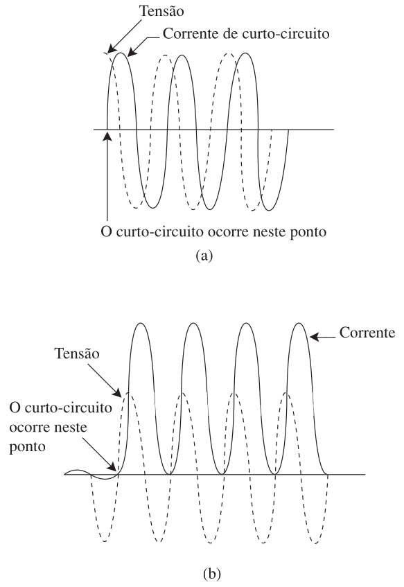
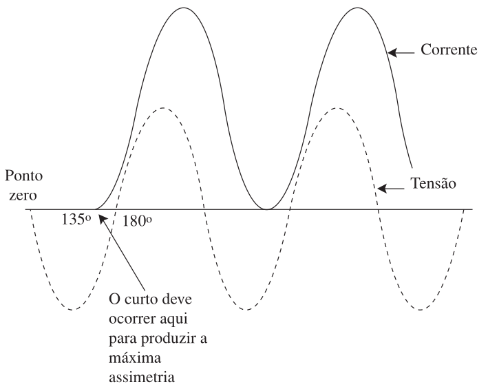
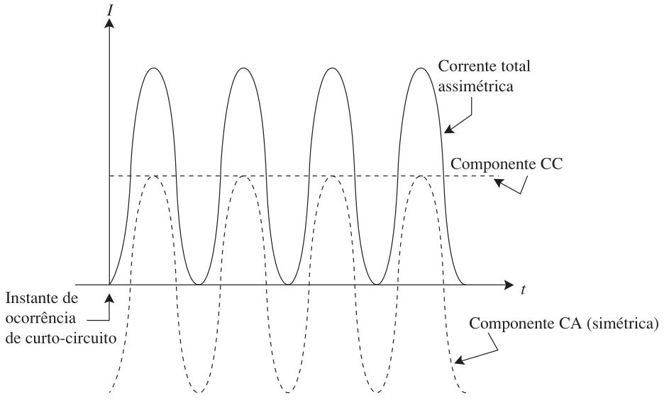
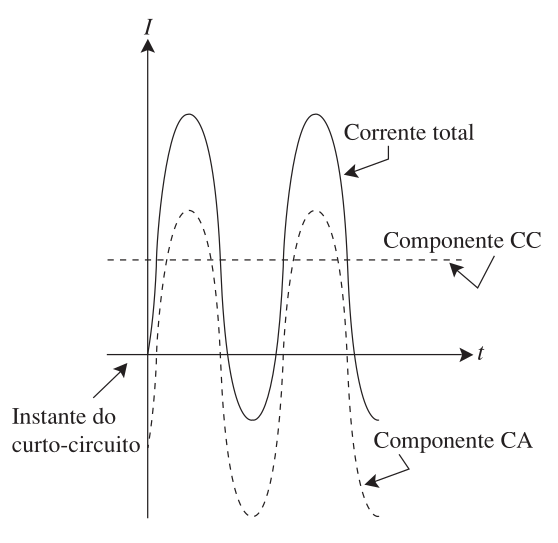
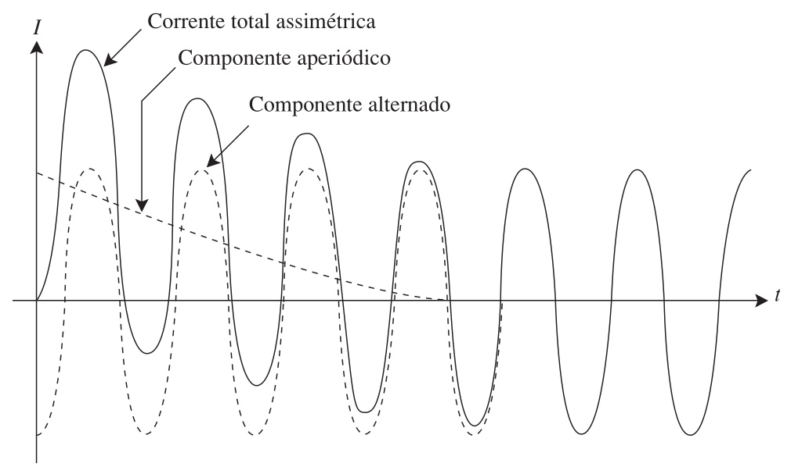
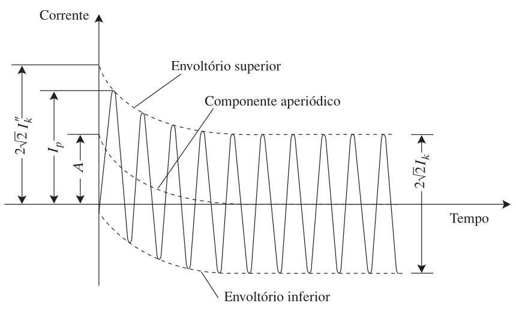

ELE618 - Sistemas Elétricos Industriais
Instalações Elétricas - Ademaro A. M. B. Cotrim
Cap10 - Ademaro A. M. B. Cotrim
UFMG - DEE
—title: “ELE618 - Sistemas Elétricos Industriais”subtitle: “Instalações Elétricas - Ademaro A. M. B. Cotrim
Cap10 - Ademaro A. M. B. Cotrim”author: “Prof. Dr. Thales A. C. Maia”institute: “UFMG - DEE”draft: trueengine: juliaexecute: echo: trueformat: revealjs: code-fold: true theme: serif css: ../reveal-site-like.css slide-number: true chalkboard: true navigation-mode: default controls: true progress: true history: true preview-links: auto footer: “UFMG | ELE618 - Sistemas Elétricos Industriais” transition: slide background-transition: fade scrollable: false margin: 0.05 slide-level: 2 controls-layout: bottom-right controls-tutorial: truelang: pt-BRcrossref: fig-title: Fig. tbl-title: Tab.—
Introdução
O que é uma Falta?
- Ocorrem faltas (curto-circuitos) que resultam em sobrecorrentes elevadas
- Os dispositivos de proteção devem atuar com rapidez e segurança, isolando o defeito
- Cabos, barras e componentes devem suportar os efeitos térmicos e mecânicos das correntes de falta
- A avaliação das correntes de falta é complexa e depende de:
- Impedância da rede de AT/MT e fontes
- Impedância das linhas de BT
- Resistência da falta (arco elétrico)
- Instante de início da falta (fase inicial)
Fontes de Correntes de Falta
Contribuição de Máquinas
- As correntes provêm de máquinas elétricas girantes (geradores e motores)
- Corrente inicial é elevada, decrescendo depois
- Geradores Síncronos: Mantêm a corrente se continuarem acionados e excitados
- Motores Síncronos: A inércia mecânica e carga agem como motorização, alimentando a falta
- Motores de Indução: Contribuição existe mas desaparece rapidamente devido à desexcitação
- O sistema da concessionária também fornece contribuição
Análise da Corrente de Curto-Circuito
Corrente Simétrica vs Assimétrica
- Fator de potência de curto-circuito (\(\cos \Phi_k\)) é determinado a partir da reatância indutiva e da resistência totais.
- Se a reatância for muito maior que a resistência (sistema puramente indutivo, \(\cos \Phi_k \approx 0\)):
- Curto ocorrendo com a tensão no valor de crista: a corrente é simétrica.
- Curto ocorrendo com a tensão passando por zero: a corrente é totalmente assimétrica.

Fig. 1: Correntes de curto-circuito em um sistema com fator de potência praticamente igual a zero; (a) corrente simétrica, (b) corrente totalmente assimétrica (Cotrim, 2009)
Máxima Assimetria
- O ponto na onda de tensão no qual o curto deverá ocorrer para que se tenha máxima assimetria dependerá da relação entre a reatância indutiva e a resistência do sistema.
- A máxima assimetria será obtida quando o curto se der no instante correspondente ao ângulo \((90^\circ + \Phi_k)\).

Fig. 2: Curto-circuito com máxima assimetria em um circuito com a resistência igual à reatância (Cotrim, 2009)
Componentes da Corrente de Curto-Circuito
- Para simplificar a análise, considere a corrente de curto-circuito assimétrica como formada por duas componentes: uma alternada (senoidal) e outra contínua.
- A soma de ambas dará a corrente assimétrica real.

Fig. 3: Componentes alternado e contínuo de uma corrente de curto-circuito assimétrica (Cotrim, 2009)
Componente Contínua (Aperiódica)
- O componente contínuo não continua a circular com um valor constante, a menos que a resistência do circuito seja zero.
- Como não existe tensão contínua no sistema, a energia correspondente será dissipada na forma de perda Joule.

Fig. 4: Valor do componente contínuo da corrente de curto-circuito (Cotrim, 2009)
Corrente Total Assimétrica
- O componente contínuo, chamado ‘aperiódico’, decrescerá.
- Somando-o ao componente alternado, tem-se a corrente assimétrica.
- Quando se anula o componente aperiódico, tem-se uma corrente de curto-circuito simétrica.

Fig. 5: Corrente de curto-circuito assimétrica (Cotrim, 2009)
Fundamentos dos Cálculos
Simplificações
- Falta distante de qualquer gerador (fonte)
- A rede de baixa tensão é puramente radial
- Tensões e impedâncias admitidas como constantes
- Falta direta: resistências de contato são desprezadas
- Capacitâncias das linhas desprezadas
- O cálculo baseia-se em um circuito simplificado e na Lei de Ohm: \(I_F = U/Z\)
Correntes e Fator de Tensão
- Corrente Inicial Simétrica (\(I_k''\)): Valor eficaz do componente alternado da corrente de curto-circuito presumida no instante da ocorrência da falta.
- Corrente Permanente (\(I_k\)): Valor eficaz que se mantém após a cessação dos fenômenos transitórios.
- Valor de Crista (\(i_p\)): Valor instantâneo máximo possível da corrente presumida. Depende da relação R/X.
- Fator de Tensão \(c\): Considera variações de tensão no tempo e posições de taps dos transformadores.

Fig. 6: Corrente de curto-circuito presumida relativa a uma falta distante do gerador (Cotrim, 2009)
Impedância de Curto-Circuito
Componentes do Sistema
- A impedância vista do ponto de defeito inclui:
- Rede de alimentação de Alta Tensão
- Linhas de transmissão
- Transformador
- Linhas de Baixa Tensão
- Componentes Simétricas: Utiliza-se impedâncias de Sequência Positiva, Negativa e Zero dependendo do tipo de falta (Trifásica, Bifásica ou Fase-Terra)
Cálculo das Correntes de Falta
Tipos de Falta
- Falta Trifásica: Envolve as três fases, é simétrica e geralmente produz as maiores correntes presumidas.
- Falta Bifásica: Envolve duas fases. Corrente é um pouco menor que no caso trifásico.
- Falta Fase-Terra: Envolve uma fase e a terra (ou condutor neutro). Depende significativamente da impedância de sequência zero.
- Os cálculos dimensionam os dispositivos de proteção contra os picos termomecânicos e garantem coordenação.
Exemplo de Aplicação (Diagrama Unifilar)
Abaixo é apresentado um diagrama unifilar típico utilizado para o cálculo das correntes de curto-circuito presumidas máximas e mínimas nos pontos de falta F1, F2, F3 e F4. São consideradas as contribuições dos motores e a impedância equivalente da rede, transformadores e linhas.

Fig. 7: Diagrama unifilar do exemplo citado no exemplo anterior (Cotrim, 2009)
Exercícios
Questão 1
Quais são os principais fatores que influenciam o valor da corrente de curto-circuito em uma instalação de baixa tensão?
A impedância da rede de média/alta tensão, o tipo e a potência das fontes envolvidas, a impedância das linhas de baixa tensão até o defeito, a resistência de arco elétrico e o instante de ocorrência na onda de tensão.
Questão 2
Por que a contribuição dos motores de indução para a corrente de curto-circuito desaparece mais rapidamente que a dos geradores síncronos?
Porque o fluxo de campo nos motores de indução depende da tensão da rede. Com o curto-circuito e a queda de tensão, eles se desexcitam rapidamente, enquanto máquinas síncronas podem manter sua excitação externa.
Obrigado!
UFMG | ELE618 - Sistemas Elétricos Industriais